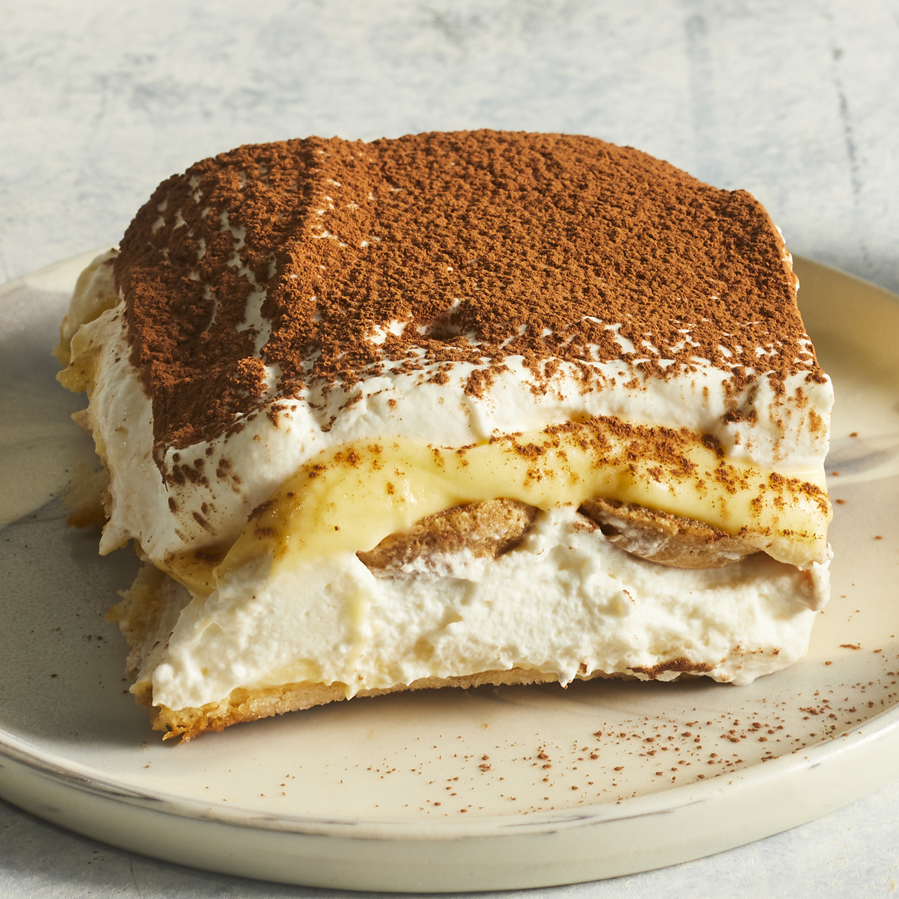

Tiramisu

Description
A combination of cream and cake with a good taste of coffee smell and cookie layer.
Ingredients
- Egg Yolks
- Sugar
- Milk
- Cream
- Vanilla
- Mascarpone
- Coffee
- Rum
- Ladyfingers
- Cocoa Powder
Steps
- Make the Filling
- Make the Whipped Cream
- Soak the Ladyfingers
- Assemble the Tiramisu